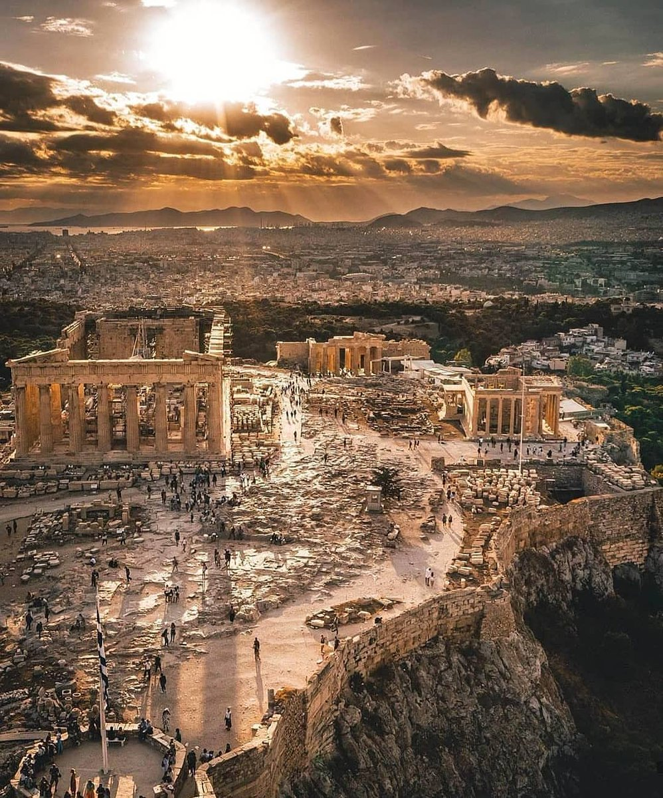
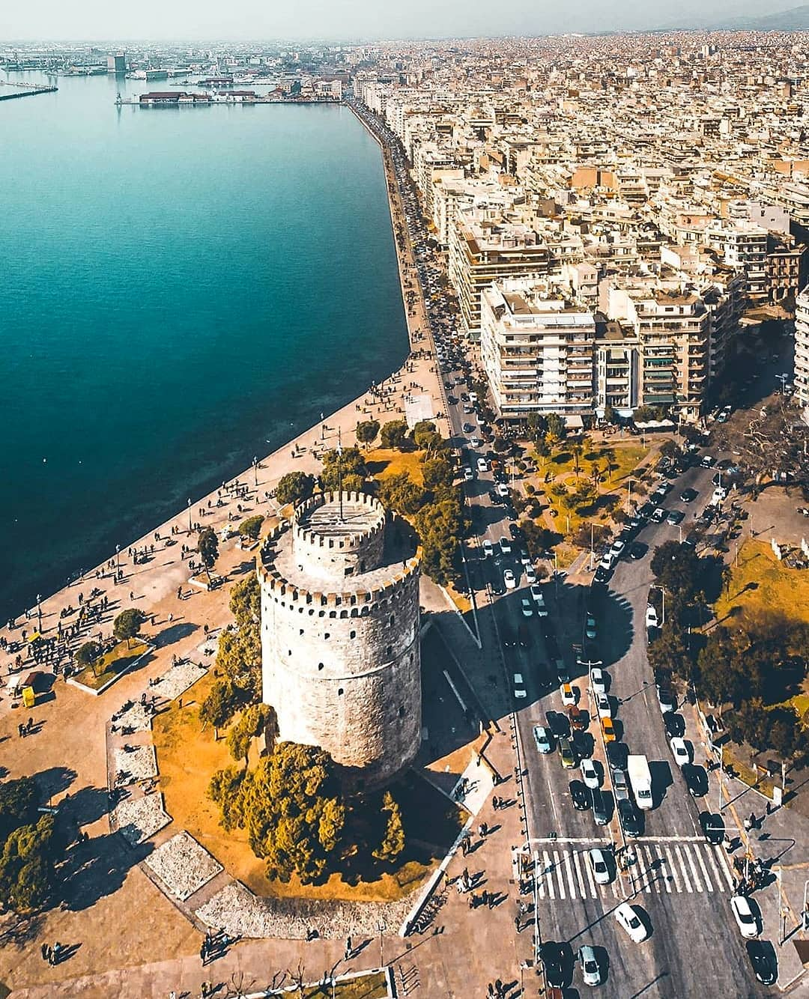

Как только вы ступаете на землю Греции, тут же попадаете в теплые солнечные объятья. Греция обласкана солнцем как ни одна другая страна средиземноморского побережья. Это совершенно удивительная страна с древней историей, благодатная и щедрая, радушная к своим гостям, страна двух тысяч островов, прекрасных пляжей, оливковых рощ, великолепной национальной кухни.
Греция – колыбель западной цивилизации. Это место, где зародилась демократия. Удивительно, что уже в Древней
Греции все граждане активно участвовали в обсуждении общественных вопросов и могли становиться
государственными представителями. Современная Греция и сейчас поддерживает свои античные традиции, но
некоторые государства мира не пришли к этому до сих пор.
Согласно археологическим раскопкам, первые человеческие поселения в Греции появились в период с 11 000 до
3000 лет до н.э. Немного позднее здесь зародились и первые цивилизации (Минойская, Кикладская и Микенская).
Самым плодотворным периодом в развитии Греции считается легендарный «Золотой век», который длился с VI по IV
век до нашей эры. Именно в это время государство дало нам десятки исключительных представителей науки и
искусства.

Афины – столица Греции и колыбель мировой культуры. В городской агломерации площадью более 410 кв. км
(почти в шесть раз меньше Москвы) проживает 3 млн человек. В Афинах, как и везде, можно увидеть
микрорайоны с панельными домами и промышленными зонами. Но туристы приезжают сюда ради исторического
центра, над которым возвышается Афинский акрополь и храм Пантеон (его начали строить еще в 447 году до
н.э.).
Афины - не просто реликвия прошлого. Это оживлённая, динамичная и современная столица. Облик города был
сформирован тысячелетиями истории и несколькими древними великими цивилизациями. Здесь можно найти
достопримечательности времён Древней Греции и Римской империи, ослепительные византийские церкви и
очаровательные исторические районы, которые всё ещё сохраняют замечательную деревенскую атмосферу.

Салоники — это второй крупнейший город Греции с 1 млн жителей. Салоники находятся на севере страны рядом
с морем. При хорошей погоде отсюда можно увидеть знаменитую гору Олимп. Самая известная
достопримечательность города – Белая башня.
Салоники считаются культурной столицей Греции. Город славится яркой и насыщенной культурной жизнью.
Также здесь расположен крупнейший университет на Балканах, что привлекает много молодёжи. Салоники -
город с древней и богатой историей. Облик старого города был сформирован древними греками, римлянами,
византийцами и османами. Поэтому здесь можно увидеть как древние монументы античного периода, так и
гораздо более современные сооружения.
Кухня Салоников имеет восточный характер и отличается большим количеством специй. Греки считают город
одной из гастрономических столиц. Это всё относится к местным деликатесам и недорогим традиционным
блюдам, а не к высокой кухне.
Ираклион - город на юге Греции на острове Крит. Назван в честь героя мифов Геракла и расположен недалеко
от легендарного Кносса - центра древней Минойской цивилизации. Ираклион - крупнейший город и порт Крита,
одно из самых популярных туристических направлений Греции. Здесь можно изучить археологические памятники
одной из древнейших цивилизаций мира - Минойской, полюбоваться на старинные византийские и венецианские
церкви, обследовать мощные средневековые укрепления, насладиться потрясающей природой острова, чистым
морем и солнцем.
Считается, что Ираклион был основан в эпоху правления Миноса и являлся морским портом Кносса. Хотя
некоторые учёные предполагают, что легендарный царь использовал порт Амнис. Археологические находки не
могут подтвердить минойское происхождение современного Ираклиона, но и не могут опровергнуть.
В Греции православная культура, поэтому главные государственные праздники страны – это Рождество, Успение и
Пасха. Во время Рождества площади всех городов красиво украшают иллюминацией, но отмечают праздник дома, в
семье. На Успение во многих местах организовывают фестивали, но наиболее пышно празднуют Пасху. С пятницы по
всей стране проходят религиозные шествия и службы, а в субботу в полночь гремят красочные фейерверки.
Еще один необычный греческий праздник – карнавал Апокриес, который проводят накануне Великого поста.
Праздничные мероприятия проходят по всей Греции, а главные из них посещает патриарх. Костюмированные шествия
и гуляния завершаются за 7 дней до конца поста.
Нужно отметить, что кроме общих национальных праздников жители большинства городов Греции отмечают
региональные праздники – фестивали сбора винограда, исторические и религиозные торжества.
Греческая кухня сочетает национальные традиции и черты кулинарии других народов. Особенно заметное влияние
на местную кухню оказала Италия и Турция. Греческие повара любят использовать в блюдах различные овощи,
травы и морепродукты. Также греки часто готовят блюда из мяса (баранина, свинина, говядина), но наибольшей
популярностью, все-таки, пользуется курица.
Одним из важнейших ингредиентов в греческой кухне считается оливковое масло (его добавляют буквально всюду),
а также томатная паста и лимоны. За обедом на столе всегда можно увидеть вино и хлеб. Обязательно попробуйте
блюда из морепродуктов, они в Греции просто восхитительны. Закажите жареную рыбу, осьминога или местный
деликатес – яйца морского ежа, приправленные оливковым маслом и лимоном.